In 2022, I graduated from Northwest High School with the passion for becoming a doctor. I really wanted to save lives, so therefore, become a cardiovascular surgeon. My hopes and dreams were inspired by Christina (Sandra Oh) from Grey's Anatomy...
... And then I started taking some college classes and taking the initiative to get competitive for Med school. And I thought to myself, "oohfff, I don't think I want to do this," "I'm not enjoying this much." I was having my quarter life crisis. Luckly for me, I was doing research at that time, and I really enjoyed it. It was a lot of computational work and coding. I was spending hours on my computer and I loved it. What made it more enjoyable was that I could watch a show while working. Trust me, the multitasking worked and I wasn't slacking or whatsoever. I should have known then, that that was the moment I had to switch majors. I loved my Intro to Programming and Intro to Machine Learning classes. But it was too late 😔. I was a third year BME student and staying for two additional years to complete a new major wouldn't be feasible for me.
... And soo, I had another brilliant idea. I thought to myself, "since I love research so much and I want to focus on machine learning, why don't I just get my PhD in computer science, with a focus in ML. Well, that didn't turn out as planned. But I decided not to give up and be optimistic. And now, I'm doing my Master's in CpE. I don't know where I plan to go from here. But I still love what I'm doing. Hopefully, I can become a master in ML and then get a job. Yay!!! ... Let's wait for the happy ending :)
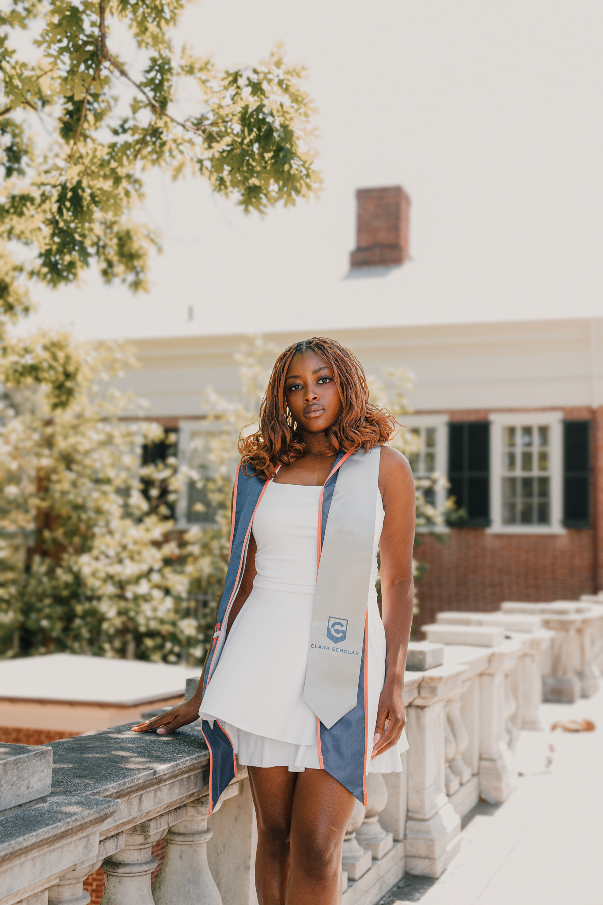
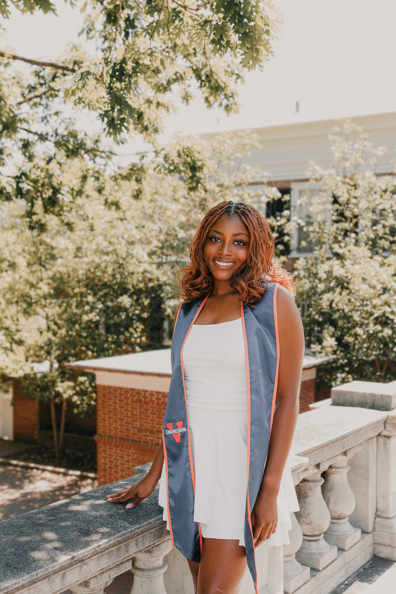
OTHER PARTS OF WHO I AM
Each week, I met with a middle schooler for STEM-focused mentoring, and we spent our time trying out hands-on activities and just learning together. One of my favorite parts was a photography project we started, where we took photos and then taught ourselves how to edit them in Photoshop. Neither of us had touched the program before, so we were kind of figuring it out side by side. We stumbled through the learning curve together until we both felt confident editing our own shots. It ended up being one of the most rewarding parts of mentoring.
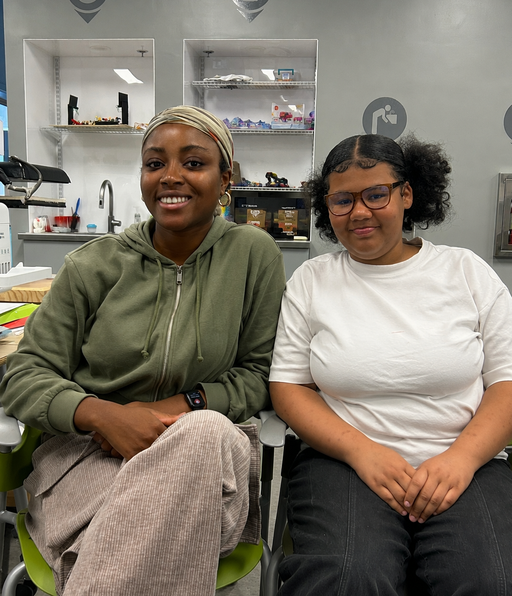
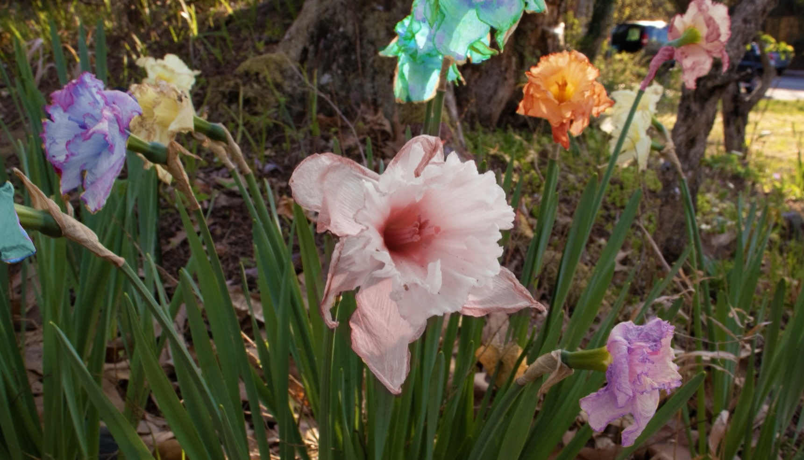
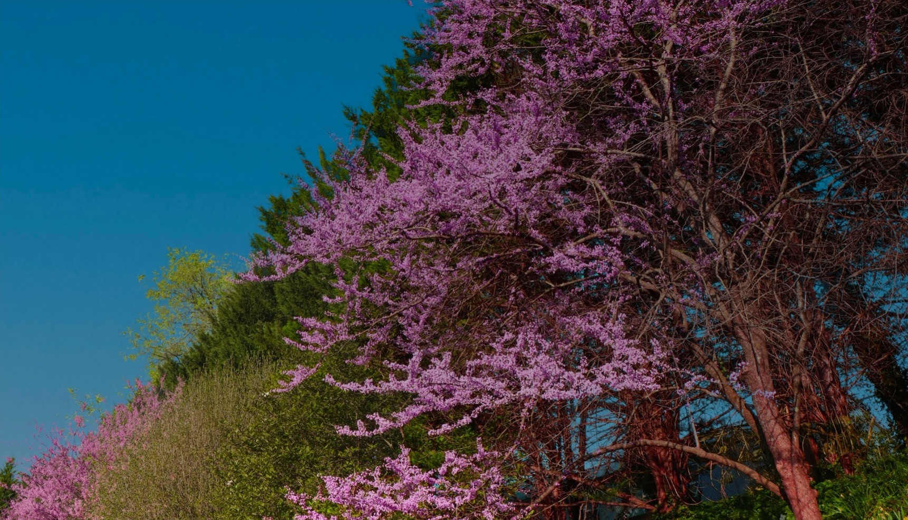
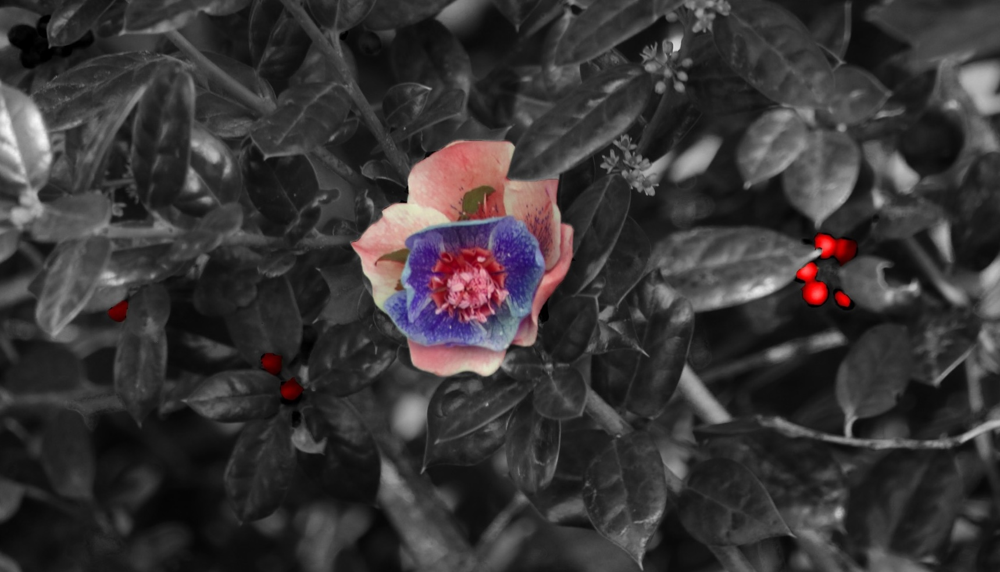
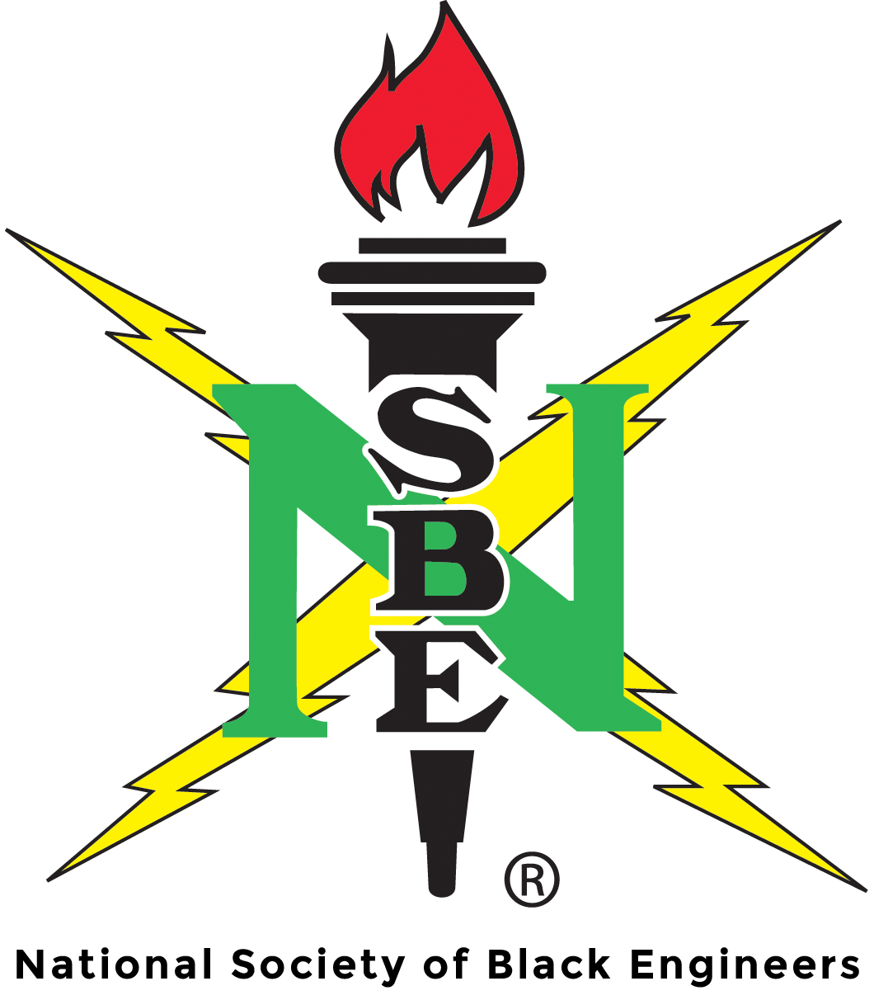
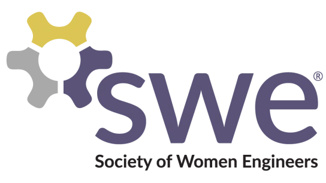
I've been a member of NSBE since my first year at UVA, having the opportunity to connect with other Black engineers in STEM. Through NSBE, I've attended technical workshops and career fairs, building friendships with people who understood both the engineering workload and the specific experience of navigating it together. Through SWE, I've had the chance to volunteer as a guest educator for middle schoolers, teaching lessons on the cardiovascular and respiratory system. I've also been part of a community that supports women in engineering through mentorship, networking, and professional development events.
As part of Chi Alpha, I led a small group of students through weekly Bible studies. I worked closely with my co-leaders to plan lessons, put together fun activities like games and hangouts, and build a space where people felt welcome to grow in faith and friendship. Along the way, I learned how to listen, ask better questions, and read the room enough to shift a conversation when someone needed something different from what I'd planned. I also got to live with some amazing girls from XA, and we grew together spiritually, learning to hold each other accountable in the small, everyday life.
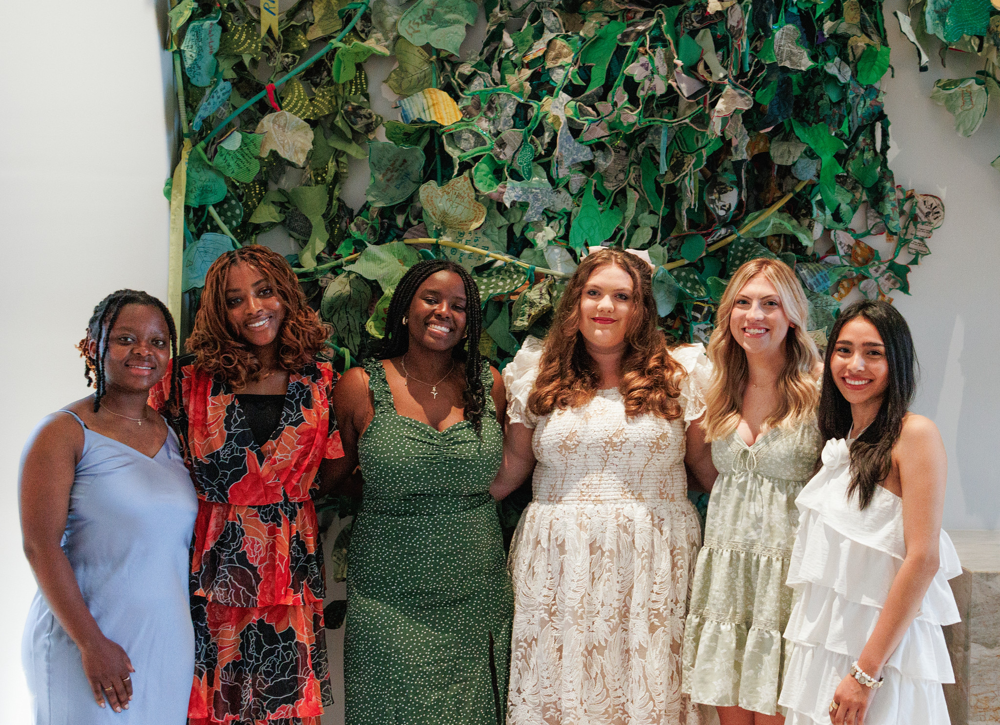
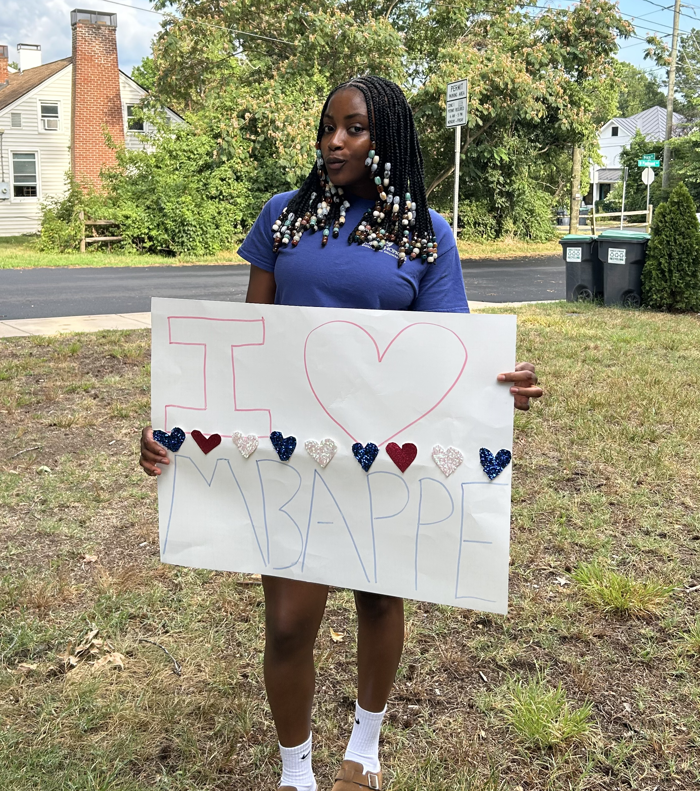
Soccer is my life, pride, and joy. While I'm not the best at soccer, I believe I can take down some soccer giants in a 1 v 1. I don't want to be too cocky, but I can take down Messi. My favorite soccer player is Mbappe. While my website is not for controversial takes, I believe it's important to express my opinions. Mbappe is the GOAT. I play intramural soccer at UVA with the best soccer team there is. We are yet to win the intramural cup, but hopefully I'm able to do so before I'm done with my Master's.
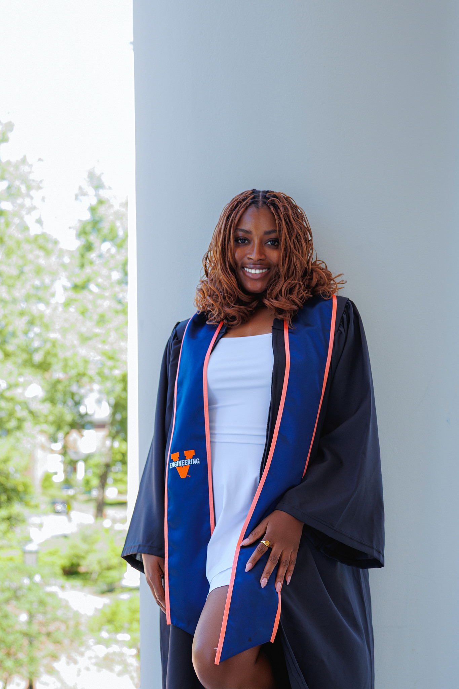
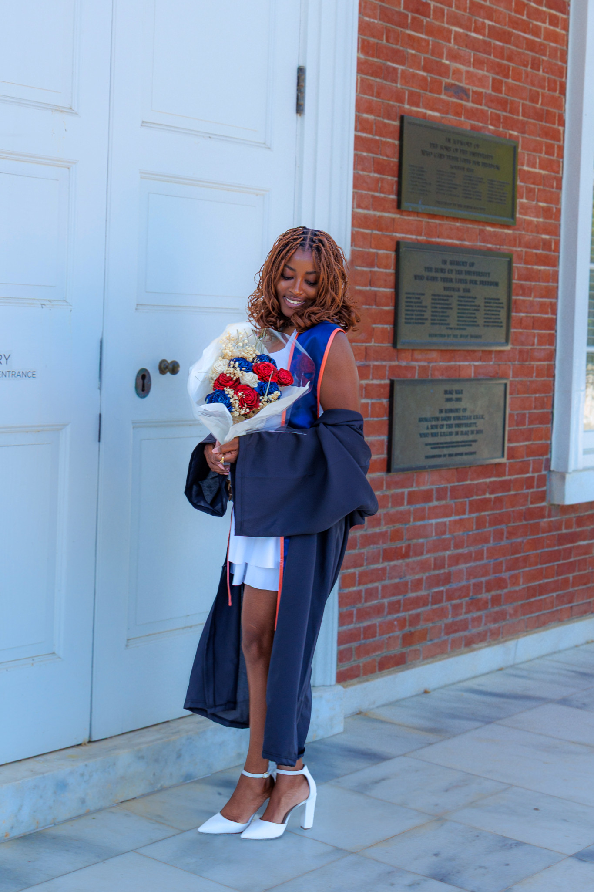
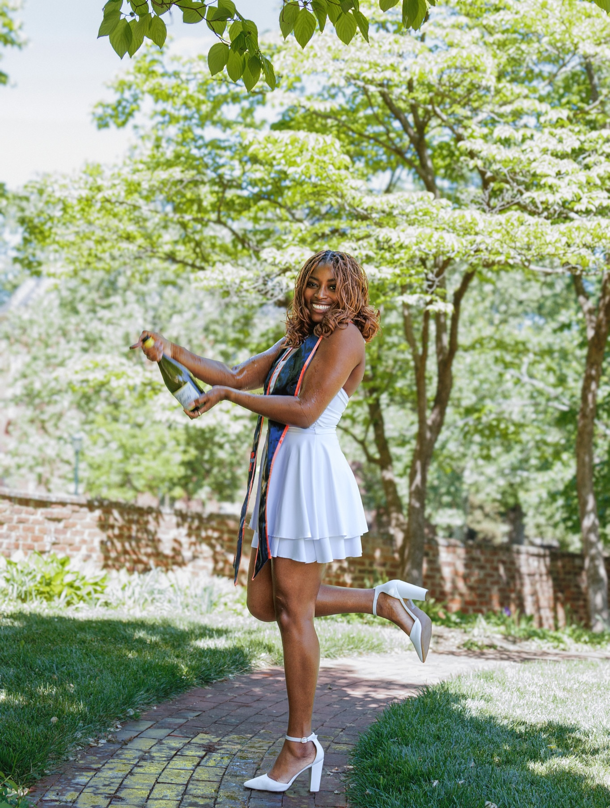
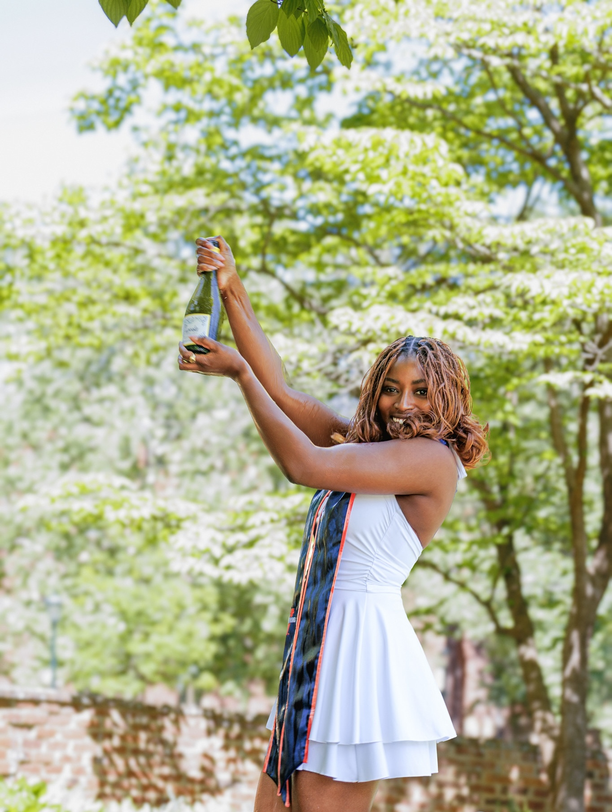